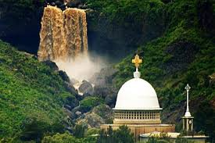

Exploring Areas around Addis Ababa: Visited nearby attractions including Debre Libanos and immersing in the rich heritage and beautiful landscapes of the region.

Hiking the Entoto Mountains: Completed the scenic trek in the Entoto Mountains near Addis Ababa, experiencing stunning views and the rich history of the area.
Related Adventure Videos
Entoto Mountain offers one of the most breathtaking panoramic views of Addis Ababa, the capital city of Ethiopia. From the historical significance of the mountain to the lush greenery and fresh mountain air, discover why Entoto is a must-visit destination for nature lovers and adventure seekers alike.
Debre Libanos Church is one of Ethiopia's most remarkable historical and spiritual sites. Nestled in a breathtaking landscape, this church has been a pilgrimage destination and a symbol of the Ethiopian Orthodox Christian faith.